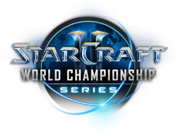

Sporturi electronice (prescurtat e-sports) este termenul care definește acțiunea de a practica la un nivel competițional și profesionist jocuri pe calculator. În prezent e-sportul Românesc a început să progreseze cu ajutorul unor organizații gen Electronic Sports League(ESL), Professional Gamers League(PGL), Arena Cyber League(ACL).
Jucătorii profesioniști sunt împărțiți în general în clanuri sau clanuri multigaming. Un clan multigaming are în componență echipe sau jucătorii pentru mai multe jocuri, de exemplu Counter Strike, League of Legends, DOTA, Warcraft 3, Fifa sau Team Fortress 2. Dar există și jocuri precum Hearthstone care au campionate individuale deoarece se bazează pe abilităţi individuale, cum este de altfel și șahul.
Este greu de spus când au început pariurile pe e-sports, dar Starcraft este cel care i-a făcut pe unii celebri. Cel mai vizionat joc acum este League of Legends. Acesta este inspirat din Dota, dar într-o versiune mai simplificată, cu o grafică animată care îi atrage pe jucătorii online. Dota 2 este jocul aflat pe lista de pariuri care oferă cele mai mari plăți, cu premii de milioane de dolari. La joc participă 10 concurenți în 2 echipe de câte cinci, încercând să distrugă baza oponenților. Counter-Strike: Global Offensive este un alt joc e-sport foarte popular. Jucătorii încearcă să finalizeze diferite obiective pentru a câștiga jocul. Pariurile pe aceste meciuri se pot face înainte de începerea kickstart-ului.
StarCraft este un joc video de strategie în timp real, științifico-fantastic militar, dezvoltat de firma Blizzard Entertainment. Primul joc al seriei StarCraft a fost lansat în versiunea pentru Microsoft Windows pe 31 martie 1998. Fiind vândut în peste 11 milioane de exemplare până în februarie 2009, este unul dintre cele mai bine vândute jocuri pentru computerele personale. O versiune pentru Mac OS a apărut în martie 1999, iar o adaptare pentru Nintendo 64, produsă în cooperare cu Mass Media Games, a fost lansată pe 13 iunie 2000. Jocul a fost dezvoltat din anul 1995, imediat după apariția jocului Warcraft II. StarCraft a debutat la expoziția E3 din 1996, unde a fost comparat nefavorabil cu Warcraft II. Drept urmare, proiectul a fost revizuit complet și a fost dezvăluit publicului la începutul anului 1997, fiind primit mult mai bine de critici. Povestea jocului a fost adaptată și extinsă printr-o serie de romane, o expansiune denumită StarCraft: Brood War și alte două extensii autorizate. Peste 12 ani mai târziu, continuarea jocului, StarCraft II: Wings of Liberty, a fost lansată în iulie 2010 urmată de două pachete de expansiune, Heart of the Swarm și Legacy of the Void.
Acțiunea jocului, plasată în secolul al XXVI-lea, se concentrează asupra a trei specii care se luptă pentru dominarea unei părți din Calea Lactee denumită Sectorul Koprulu: Terran (în română: tereștrii, denumiți de obicei Terrani de jucătorii români), oameni exilați de pe Pământ, capabili de a se adapta oricărei situații; Zerg, o rasă extraterestră asemănătoare insectelor, aflată în căutarea perfecțiunii genetice și preocupată de asimilarea altor rase; și Protoss, o rasă umanoidă, dotată cu tehnologie avansată și puteri psionice, care încearcă să-și păstreze civilizația și codul filozofic strict de a trăi de invazia Zerg. StarCraft a fost lăudat pentru ideea inovatoare de a folosi facțiuni unice în universul jocurilor de strategie în timp real și pentru intriga convingătoare.
Mulți dintre jurnaliștii din domeniul jocurilor video au lăudat StarCraft pentru impunerea unor standarde ridicate în dezvoltarea strategiilor în timp real, plasându-l printre cele mai bune și mai importante jocuri video din toate timpurile. Multiplayer-ul jocului este foarte popular în Coreea de Sud, unde jucători și echipe intră în competiții profesionale, câștigă sponsorizări și participă la turnee televizate.
StarCraft II World Championship Series (WCS) a fost o serie de turnee profesionale StarCraft II organizate de Blizzard Entertainment care s-a desfășurat din 2012 până în 2019. Pentru toate, cu excepția primului său an de funcționare, a fost cel mai înalt nivel al competiției profesionale StarCraft II. Cea mai lungă iterație a acestuia a cuprins două regiuni, World Championship Series Korea și World Championship Series Circuit, cu evenimente globale World Championship Series cu jucători din ambele regiuni. Marile finale au avut loc anual la BlizzCon din Anaheim, California, cu excepția primului an de concurs, când finalele au avut loc la Shanghai, China. Evenimentele WCS Circuit au fost transmise în flux pe Twitch, în timp ce evenimentele WCS Korea erau disponibile pe Twitch, YouTube și afreecaTV.
Competiția profesională World Championship Series Korea s-a axat pe evenimente organizate de afreecaTV sub numele Global StarCraft II League (GSL), inclusiv sezoanele GSL Code S și evenimentele GSL Super Tournament. Competiția profesională a circuitului World Championship Series Circuit s-a axat pe turneele organizate sub numele World Championship Series Circuit cu calificări organizate pentru fiecare sub numele World Championship Series Challenger.
Campionatul Mondial Competiția globală a prezentat două evenimente mari în fiecare an. Acestea au fost evenimentul Campionatului Mondial Intel Extreme Masters de la ESL în Katowice, Polonia și evenimentul GSL de la afreecaTV vs. Evenimentul Mondial din Seul, Coreea. Pentru ultimele două iterații, ca parte a sistemului WCS, prima a primit fondul colectiv de fonduri, la fel ca și evenimentul Global Finals pentru ultimele trei iterații. Acest lucru a fost realizat prin sistemul StarCraft II War Chest, care le-a permis jucătorilor să cumpere articole cosmetice în joc, 25% din vânzări fiind destinate finanțării scenei profesionale.

League of Legends este un joc online competitiv cu ritm alert care combină viteza şi intensitatea unui joc RTS cu elemente RPG. Două echipe de campioni puternici, fiecare cu un design şi stil de joc unic, luptă direct pe diverse câmpuri de bătălie şi în moduri de joc diferite. Cu o paletă din ce în ce mai largă de campioni, actualizări frecvente şi o scenă de turnee înfloritoare, League of Legends oferă o posibilitate infinită de reluare a jocului pentru jucători aflaţi la orice nivel de abilităţi.
Campionatul Mondial de League of Legends (în engleză: League of Legends World Championships) este o compeție anuală organizată de Riot Games. Sezonul 1 al Campionautul Mondial a avut loc în iunie 2011, la Dreamhack în Suedia, având o valoare totală a premiilor de 50.000 de dolari. După sezonul 1, Riot a anunțat bugetul pentru sezonul 2: 5.000.000 de dolari. Din această sumă, două milioane de dolari se vor duce către partenerii Riot, incluzând IPL și alte Asociații de Sporturi-Electronice. Alte două milioane de dolari se vor duce către echipele calificate și echipa câștigătoare a sezonului. Ultimul milion de dolari a fost distribuit organizatorilor pentru a găzdui turneul de League of Legends. După sezonul 2, premiul turneului a crescut cu mai mult de 2 milioane de dolari iar premiul pentru echipa câștigătoare a crescut la 1 milion de dolari.

După sezonul din 2014, Riot Games a introdus niște schimbări în jocul competitiv League of Legends. Numărul echipelor din Seria Campionatului de League a fost ridicat de la 8 la 10 în ambele regiuni, America de Nord și Europa. Un alt 2-lea turnament internațional oficial a fost anunțat de către Riot Games, a prezentat o singură echipă din fiecare regiune majoră și o echipă "wildcard". De asemena, fiecare echipă trebuia să aibă un antrenor cu care să comunice între meciuri și la faza de interzicere a campionilor și la alegerea lor. Antrenorul nu era recunoscut oficial până atunci.
Meciurile Campionatului Mondial au fost susținute în mai multe orașe din Europa în octombrie 2015. Câștigătorul 2015 Worlds, a fost SK Telecom T1, pentru a 2-a oară pentru că au câștigat și în 2013. Finala a fost urmărită de către 36 de milioane de oameni, iar în momentul de top, 14 milioane de oameni au urmărit jocul deodată.
Counter-Strike: Global Offensive (CS: GO) este un shooter multiplayer la prima persoană dezvoltat de Valve și Hidden Path Entertainment. Este al patrulea joc din seria Counter-Strike. Dezvoltat de peste doi ani, Global Offensive a fost lansat pentru Windows, macOS, Xbox 360 și PlayStation 3 în august 2012 și pentru Linux în 2014. Valve actualizează în mod regulat jocul, atât cu patch-uri de echilibrare mai mici, cât și cu adăugări de conținut mai mari.
Jocul pune două echipe, teroriști și contrateroriști, unul împotriva celuilalt în diferite moduri de joc bazate pe obiective. Cele mai comune moduri de joc implică teroriștii care plantează o bombă în timp ce contrateroristii încearcă să-i oprească sau contrateroristii care încearcă să salveze ostaticii pe care teroriștii i-au capturat. Există opt moduri de joc oficiale, toate având caracteristici distincte specifice modului respectiv. Jocul are, de asemenea, suport de potrivire care permite jucătorilor să se joace pe servere dedicate Valve, pe lângă serverele găzduite de comunitate cu hărți personalizate și moduri de joc. Un mod de joc Battle-Royale, „Zona de pericol”, a fost introdus în decembrie 2018.
Global Offensive a primit recenzii pozitive de la critici la lansare, care au lăudat jocul pentru jocul său și fidelitatea față de seria Counter-Strike, deși a fost criticat pentru unele caracteristici timpurii și diferențele dintre versiunile de consolă și PC. De la lansare, a atras aproximativ 11 milioane de jucători pe lună și rămâne unul dintre cele mai jucate jocuri de pe platforma Steam a lui Valve. În decembrie 2018, Valve a făcut tranziția jocului la un model free-to-play, concentrându-se pe veniturile din articole cosmetice.

Jocul are o scenă sportivă activă, continuând istoria jocului competițional internațional din jocurile anterioare din serie. Echipele concurează în ligi și turnee profesionale, iar Global Offensive este acum unul dintre cele mai mari esports la nivel mondial.
Hearthstone: Heroes of Warcraft este un joc online, de cărți colecționabile, publicat de Blizzard Entertainment. Jocul este gratuit, cu posibilitatea de a cumpăra cărți sau aventuri adiționale folosind bani adevărați. Jocul a fost lansat pe 11 martie 2014 și este disponibil pentru Windows , OS X , iOS și Android. Jocul de cărți de colecție online Blizzard Entertainment , Hearthstone, a devenit rapid jucat profesional după lansarea sa în martie 2014. Jocul este jucat ca un esport , cu turnee de nivel înalt, cum ar fi Campionatul Mondial oficial al lui Blizzard, cu premii de până la 1 milion de dolari și live streaming poate câștiga bani prin streaming pe Twitch .
Jocul este un joc de cărți bazat pe ture între doi adversari, folosind punți construite de 30 de cărți împreună cu un erou selectat cu o putere unică. Jucătorii își folosesc cristalele de mană limitate pentru a juca abilități sau pentru a invoca slujitori pentru a ataca adversarul, cu scopul de a distruge eroul adversarului. Câștigarea meciurilor și completarea misiunilor câștigă aur în joc, recompense sub formă de cărți noi și alte premii în joc. Jucătorii pot cumpăra pachete de cărți noi prin aur sau microtransacțiuni pentru a-și personaliza și îmbunătăți punțile. Jocul prezintă mai multe moduri de joc, inclusiv meciuri casual și clasate, bătălii pe arena proiectate și aventuri cu un singur jucător. Conținutul nou pentru joc implică adăugarea de noi seturi de cărți și joc, sub forma unor pachete de expansiune sau aventuri care recompensează jucătorul cu cărți de colecție la finalizare.
Spre deosebire de alte jocuri dezvoltate de Blizzard, Hearthstone a fost un joc experimental dezvoltat de o echipă mai mică bazată pe aprecierea jocurilor de cărți de colecție de la companie. Jocul a fost conceput pentru a evita capcanele altor jocuri digitale de cărți de colecție, eliminând orice joc posibil de la un adversar în timpul rândului unui jucător și replicând senzația unui joc de cărți fizic în interfața de utilizare a jocului. Multe dintre concepte, precum și bunuri de artă, s-au bazat pe cele publicate anterior în jocul de cărți de tranzacționare World of Warcraft fizic.
Jocul a fost revizuit favorabil de către critici și a fost un succes pentru Blizzard, câștigând aproape 40 de milioane USD pe lună din august 2017. În noiembrie 2018, Blizzard a raportat peste 100 de milioane de jucători Hearthstone. Jocul a devenit popular ca esport, cu turnee cu premii în bani găzduite de Blizzard și alți organizatori.